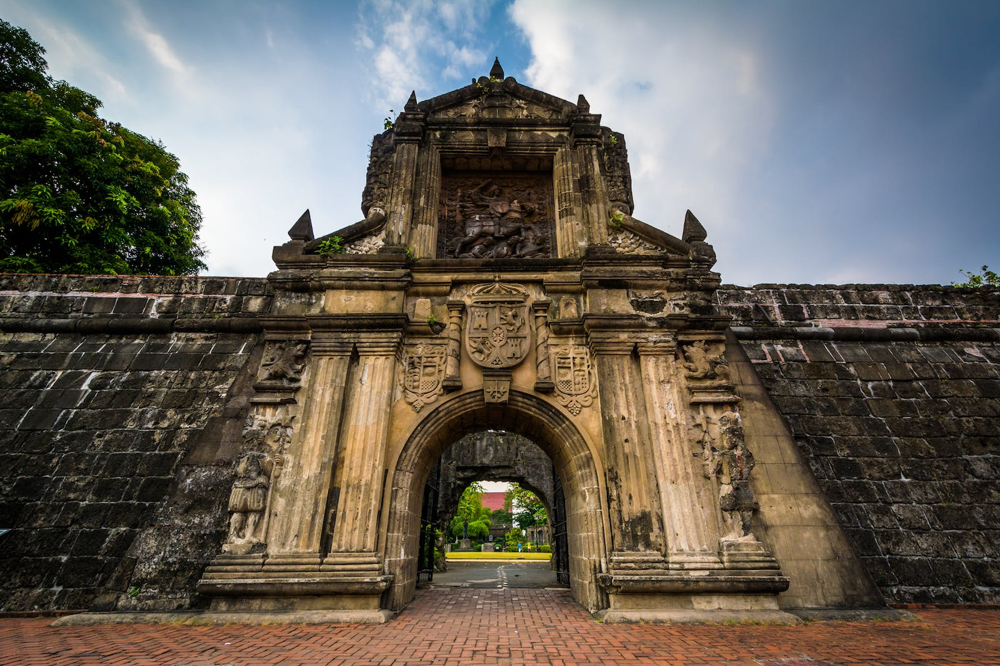

LUNETA
Rizal Park is a historical urban park located in the Ermita district along Roxas Boulevard in the city of Manila.
It is commonly known to many Filipinos as Luneta Park. Rizal Park has a size of 58 hectares or 580000 square meters..

INTRAMUROS
Old-world Intramuros is home to Spanish-era landmarks like Fort Santiago, with a large stone gate
and a shrine to national hero José Rizal. The ornate Manila Cathedral houses bronze carvings and
stained glass windows, while the San Agustin Church museum has religious artwork and statues.
Spanish colonial furniture and art fill Casa Manila museum, and horse-drawn carriages (kalesa)
ply the area’s cobblestone streets..

NATIONAL MUSEUM
National museums are museums whose collections belong to the State. A distinction is made between museums under the authority of the Ministry of Culture, the list of which is included in the Heritage Code
(Articles R. 421-2 et seq.), and museums that are under the authority of another ministry.